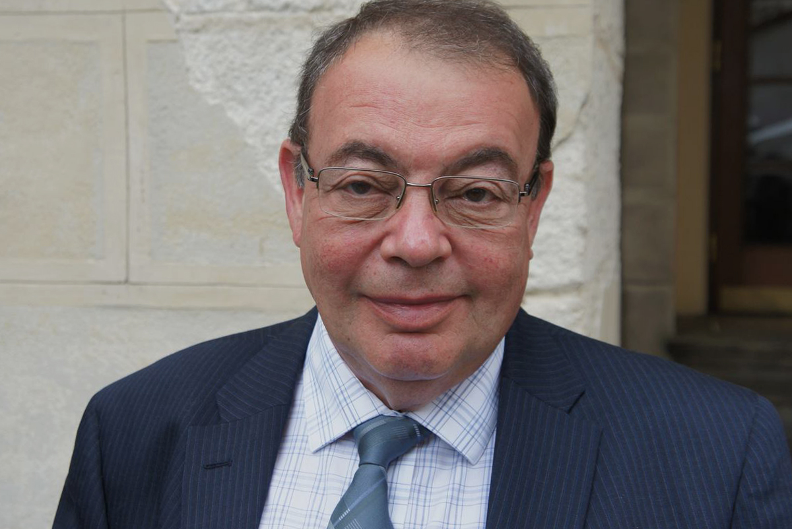

أفضل طريقة لفقدان الوزن بسرعة و أمان
دكتور : أوفاتوف أوليغ فاليريفيتش
للحصول على شكل نحيف وقوي ومثير. نحن لا نتحدث عن فقدان الوزن الشديد الذي يتركك متعبًا وضعيفًا وتبقى نحيفًا. تعتبر المكملات الغذائية طريقة رائعة لمساعدتك في تحقيق ذلك ، لذلك سنلقي نظرة على أفضل مكمل غذائي لفقدان الوزن .
في هذا المقال سوف نتحدث عن :
-
كيف تفقد الوزن بشكل سليم ؟
-
ما هي اضرار مشاكل السمنة ؟
-
ما هي أفضل طريقة لفقدان الوزن ؟
-
أفضل منتج لفقدان الوزن بأمان
سوف يجاوبنا اليوم الدكتور اوليغ و هو طبيب متخصص بمشاكل السمنة و هو ممارس عام ، دكتور في العلوم الطبية ، أستاذ
مقدمة
في الوقت الحاضر ، يسعى الكثير من الناس لتحقيق الهدف طويل المدى المتمثل في فقدان الوزن لتحسين صحتهم ورفاهيتهم. يلعب الأطباء دورًا مهمًا في مساعدة المرضى على الوصول إلى هذا الهدف من خلال تقديم المشورة بشأن التغذية السليمة والتمارين الرياضية ، فضلاً عن الطرق الغير فعالة . في هذه المقالة سوف نلقي نظرة على دور المكملات الغذائية والطبيعية في تحقيق هدف خسارة الوزن على المدى الطويل.
يشير فقدان الوزن إلى العملية التي يخضع لها الجسم لفقدان الدهون والوزن الزائد، ويتم ذلك عادة عن طريق الحد من تناول السعرات الحرارية أو زيادة نشاط الجسم أو مزيج من الاثنين. يمكن أن يكون فقدان الوزن مفيدًا للأشخاص الذين يعانون من زيادة الوزن الزائد أو البدانة، حيث يمكن أن يؤدي إلى تحسين الصحة العامة واللياقة البدنية والشعور بالثقة بالنفس.
و ها هو ملخص الحوار ما بين المراسلة إيرينا و الطبيب اوليغ .
المراسلة إيرينا :أخبرنا من فضلك, ما هي فوائد فقدان الوزن ؟
رد الدكتور اوليغ : سوف أقول لكي ما هي هذه الفوائد في بضعة نقاط و هي :
- تحسين الصحة العامة: يساعد فقدان الوزن على تحسين صحة القلب والأوعية الدموية، وخفض ضغط الدم والكوليسترول ومستويات السكر في الدم، وبالتالي تقليل خطر الإصابة بالأمراض المزمنة مثل مشاكل القلب والسكري والسرطان.
- تحسين اللياقة البدنية: يزيد فقدان الوزن من مستوى اللياقة البدنية، وتحسين القدرة على التحمل البدني والأداء الرياضي، وبالتالي تحسين جودة الحياة والحركية.
- تحسين العافية النفسية: يزيد فقدان الوزن من الثقة بالنفس والتقبّل الذاتي، وتحسين الحالة المزاجية والعافية النفسية بشكل عام، وتقليل مشاكل القلق والاكتئاب.
- تحسين المظهر الخارجي: يؤدي فقدان الوزن إلى تحسين شكل الجسم والمظهر الخارجي، وتحسين الإحساس بالجاذبية والجمال.
- تحسين جودة النوم: يزيد فقدان الوزن من جودة النوم، وتحسين النوم العميق والنوم المستمر، وبالتالي تحسين الراحة والاسترخاء.
المراسلة إيرينا : ما هي أفضل المنتجات او الاطعمة التي يجب تناولها لفقدان الوزن بسرعة و أمان ؟
رد الدكتور اوليغ : أود أن أصف بمزيد من التفصيل منتجين ، بعد دراسات عديدة ، في رأيي تبين أنهما أفضل - هما الزنجبيل والتورين
المراسلة إيرينا : أخبرنا من فضلك ما هي فوائد هذه المنتجات .
رد الدكتور اوليغ : بالطبع دعينانبدأ بفوائد مستخلص الزنجبيل و هي كالأتي :
- تحفيز عملية الأيض: يحتوي الزنجبيل على مادة الجينجرول التي تعمل على تحفيز عملية الأيض وزيادة حرق السعرات الحرارية، مما يساعد على فقدان الوزن.
- تحسين الهضم: يمتلك الزنجبيل خصائص مضادة للالتهابات والتشنجات ويساعد على تحسين عملية الهضم وامتصاص العناصر الغذائية، وبالتالي تحسين عملية الأيض وزيادة فرص فقدان الوزن.
- تثبيط الشهية: يمكن أن يساعد تناول الزنجبيل على تثبيط الشهية والحد من الرغبة في تناول الوجبات السريعة والحلويات وبالتالي التحكم في تناول السعرات الحرارية.
- تحسين مستويات الطاقة: يحتوي الزنجبيل على العديد من العناصر الغذائية والفيتامينات التي تساعد على زيادة مستويات الطاقة وتحسين الأداء البدني، مما يساعد على زيادة النشاط البدني وتحسين فرص فقدان الوزن.
المراسلة إيرينا : و هل ستخبرنا عن فوائد التورين أيضاً ؟
رد الدكتور اوليغ : بالطبع! فوائد التورين هي :
- زيادة حرق الدهون: يمكن للتورين المساعدة في زيادة حرق الدهون والطاقة التي تستهلكها الجسم، وذلك عن طريق تحفيز عملية الأيض وزيادة معدل الأيض الأساسي.
- تحسين الأداء الرياضي: يمكن للتورين تحسين الأداء الرياضي وزيادة قدرة الجسم على الأداء البدني، مما يساعد على زيادة النشاط البدني وتحسين فرص فقدان الوزن.
- تقليل الإجهاد والتعب: يمكن للتورين المساعدة في تقليل الإجهاد والتعب الذي يمكن أن يؤثر على النشاط البدني وتحفيز الشهية، وبالتالي يمكن أن يساعد على تحقيق أهداف فقدان الوزن.
- تحسين صحة القلب: يمكن للتورين المساعدة في تحسين صحة القلب والأوعية الدموية، وتقليل خطر الإصابة بالمشاكل القلبية.
التورين هو حمض أميني طبيعي يوجد بشكل طبيعي في الجسم ويمكن العثور عليه أيضًا في المكملات الغذائية. وله العديد من الفوائد في فقدان الوزن، ومن بينها:
المراسلة إيرينا : و لكن كيف يمكننا إيجاد هذه المواد و كيف ؟
رد الدكتور اوليغ : لقد بحثت كثيراً عن منتج يجمع بين كل هذه المكونات معاً و بالفعل لقد وجدت الحل .
المراسلة إيرينا : هل يمكنك إخبارنا ما هو هذا المنتج الذي يجمع هذه المكونات معاً ؟

رد الدكتور اوليغ : بكل ثقة هو المكمل الغذائي MYRALOSE
المراسلة إيرينا : ما هو MYRALOSE ؟
رد الدكتور اوليغ : هو مكمل غذائي طبيعي 100% يعمل على فقدان الوزن عن طريق تقليل الشهية و زيادة معدل الأيض و تحسين عملية الأيض لدى الجسم.
المراسلة إيرينا : و ما هي مكونات MYRALOSE ؟
رد الدكتور اوليغ : مكوناته طبيعية 100% و هي :
- كافيين
- التورين
- مستخلص الزنجبيل
- فيتامين ب 3
- فيتامين ب 5
- فيتامين ب 6
تحفيز عملية الأيض: يمكن للكافيين تحفيز عملية الأيض وزيادة معدل الأيض الأساسي للجسم، مما يعني أن الجسم يحترق السعرات الحرارية بشكل أسرع وأكثر فعالية. و يمكنه أيضاً تحسين الأداء الرياضي وزيادة قدرة الجسم على الأداء البدني، مما يساعد على زيادة النشاط البدني وتحسين فرص فقدان الوزن
و هو الركب الأساسي للمكمل الغذائي حيث يعمل على زيادة حرق الدهون والطاقة التي تستهلكها الجسم، وذلك عن طريق تحفيز عملية الأيض وزيادة معدل الأيض الأساسي.

حيث انه يعمل على تحفيز عملية الأيض